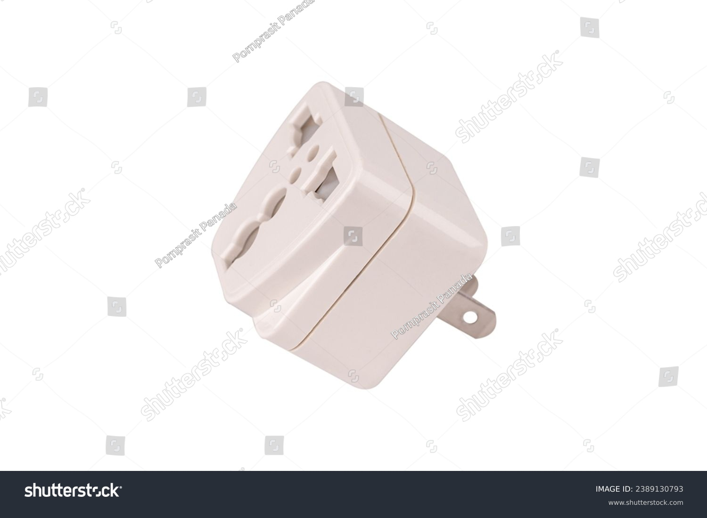

What is an Adaptor?
An adaptor is a device that enables one type of plug or socket to connect to a different type. It is commonly used when traveling to different countries or for electrical appliances to ensure compatibility with the local power supply. Adaptors are typically used to connect devices with different plug shapes, voltages, and frequencies.

Types of Adaptors
Power Adaptor:
Power adaptors are used to convert the voltage and current from the power source to be compatible with the device. They ensure the device receives the appropriate power it requires.
Uses: Laptops, smartphones, tablets, and other electronic devices that require specific voltage and current.
Plug Adaptor:
Plug adaptors allow electrical plugs to fit into different sockets, often used for international travel to match plug types in different countries.
Uses: Travel, international power connections, and connecting devices to local outlets with different plug designs.
Universal Adaptor:
Universal adaptors are versatile and can convert various plug types to suit different socket designs. They are often used for travelers who need to plug in devices to multiple types of sockets.
Uses: Global travel, connecting devices to sockets of different shapes and voltages.
Applications of Adaptors
Adaptors are essential for many purposes, such as:
- Connecting devices with different plug types to a single power source
- Changing voltage levels for electronic devices
- Ensuring compatibility for international travel
- Enabling the connection of devices to foreign power outlets
அடாப்டர் (Adaptor)
அடாப்டர் என்பது ஒரு வகையான பிளக் அல்லது சாக்கெட் ஒன்றை வேறு வகையான பிளக் அல்லது சாக்கெட் உடன் இணைக்கும் சாதனமாகும். இது பொதுவாக பயணம் செய்யும் போது அல்லது மின்சார சாதனங்கள் நாட்டின் மின்சார வழங்கலுடன் ஏற்படுவதை உறுதிப்படுத்த பயன்படுகிறது. அடாப்டர்கள் பொதுவாக வெவ்வேறு பிளக் வடிவங்களைக் கொண்ட சாதனங்களை மின்சார வளையங்களில் இணைக்க பயன்படுத்தப்படுகின்றன.
அடாப்டரின் வகைகள்
பவர் அடாப்டர்:
பவர் அடாப்டர்கள் மின்வலுத்தன்மை மற்றும் மின்வழிச் சுழற்சியிலிருந்து மாற்றங்களை மாற்றி சாதனத்திற்கு பொருத்தமாக செயல்படும் முறையில் மின்சாரத்தை வழங்குகின்றன.
பயன்பாடுகள்: லேப்டாப்கள், ஸ்மார்ட்போன்கள், டேப்லெட்டுகள் மற்றும் மின்னணு சாதனங்கள்.
பிளக் அடாப்டர்:
பிளக் அடாப்டர்கள் மின்சார பிளக் வடிவங்களை வேறு சாக்கெட்டுகளுடன் இணைக்க உதவுகின்றன, இது பொதுவாக சர்வதேச பயணங்களுக்கு பயன்படுகிறது.
பயன்பாடுகள்: பயணம், சர்வதேச மின்சார இணைப்புகள், மின்சார சாதனங்களை உள்ளூர் பிளக் வடிவங்களுடன் இணைக்க.
உருவான அடாப்டர்:
உருவான அடாப்டர்கள் பல பிளக் வடிவங்களை பல்வேறு சாக்கெட் வடிவங்களில் இணைக்கும் வகையில் வடிவமைக்கப்பட்டவை.
பயன்பாடுகள்: உலகளாவிய பயணம், பல்வேறு வடிவங்களின் சாக்கெட்டுகளுடன் இணைக்க.
அடாப்டரின் பயன்பாடுகள்
அடாப்டர்கள் பல்வேறு பயன்பாடுகளில் முக்கிய பங்கு வகிக்கின்றன:
- வெவ்வேறு பிளக் வகைகளை ஒரே மின்சார வளையத்திற்கு இணைக்க
- மின்னணு சாதனங்களுக்கு மின்வலுத்தன்மையை மாற்ற
- சர்வதேச பயணத்திற்கு பயன்பாடு
- சாதனங்களை வெளிநாட்டு மின்சார சாக்கெட்டுகளுக்கு இணைக்க